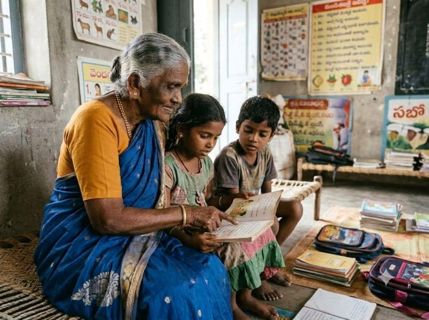
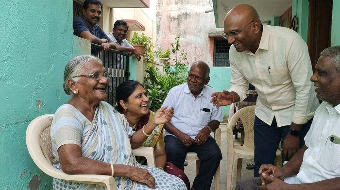
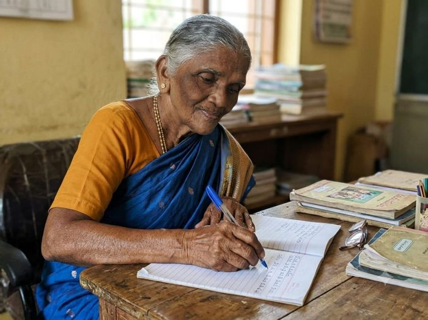

Read in
Premamma was born in 1942 in Parumanchala, a village in Nandikotkur mandal of Kurnool district, into a poor family that lived under oppression. In an age when it was hard for a girl simply to go to school, she kept studying through poverty, discrimination and obstacle after obstacle. Convinced that education alone could change her life, she pressed on with determination — and won a government job.
She never saw that job as just a way to earn a living. To her it was a chance to serve. She went from house to house to find children who were not in school, and enrolled them. She stood behind her younger brothers so they could study. Even after her marriage she never set aside her duties to the family she was born into, and through tuition classes she helped many more children learn.
Premamma gave birth to four children. Carrying the grief of losing one of them, she worked tirelessly for the future of the other three — raising one to become an IPS officer, another a professor, and her daughter a doctor. And it was never only her own children: she stood by the education of children from the families around her too.
Retirement from government service did not end her work for education. Today she lives in Alampur, on the banks of the Tungabhadra river in Jogulamba Gadwal district, Telangana, where she helps and encourages poor children who are eager to learn.
Her journey, which began in Parumanchala, has inspired many lives. Determined that the hardships she faced should never stand in another child’s way, she helped as many children with their studies as she could, and turned her own experience into a guide for others.
Premamma’s life makes one thing clear: education can change not only a person’s life, but the future of a whole family. That belief shows in everything she achieved, in the support she gave to children’s education, and in the responsibility she has always felt towards society.
Premamma is not just a name. It is the persistence that faced down poverty, the courage that crossed every barrier, and the inspiration that opened new doors — for her own family and for so many other children.
She learned, and changed her own life…
With the letters she learned, she changed so many more.
కర్నూలు జిల్లా, నందికొట్కూరు మండలంలోని పారుమంచాల గ్రామంలో 1942లో ఒక నిరుపేద, అణచివేతకు గురైన కుటుంబంలో ప్రేమమ్మ జన్మించింది. ఆడపిల్లలు చదువుకోవడమే కష్టంగా ఉన్న కాలంలో పేదరికం, వివక్ష, ఎన్నో అడ్డంకులను ఎదుర్కొంటూ చదువును కొనసాగించింది. విద్యే తన జీవితాన్ని మార్చగలదనే నమ్మకంతో పట్టుదలగా ముందుకు సాగి ప్రభుత్వ ఉద్యోగాన్ని సాధించింది.
ఉద్యోగాన్ని కేవలం జీవనోపాధిగా కాకుండా, సమాజానికి సేవ చేసే అవకాశంగా భావించింది. బడికి వెళ్లని పిల్లలను ఇంటింటికీ వెళ్లి గుర్తించి పాఠశాలల్లో చేర్పించింది. తన తమ్ముళ్ల చదువుకు అండగా నిలిచింది. పెళ్లయిన తర్వాత కూడా పుట్టింటి బాధ్యతలను మరచిపోలేదు. ట్యూషన్లు చెబుతూ మరెంతోమంది పిల్లలు చదువుకోవడానికి తోడ్పడింది.
నలుగురు బిడ్డలకు జన్మనిచ్చిన ప్రేమమ్మ, వారిలో ఒకరిని కోల్పోయిన బాధను భరిస్తూనే మిగిలిన ముగ్గురి భవిష్యత్తు కోసం ఎంతో కృషి చేసింది. ఒకరిని ఐపీఎస్ అధికారిగా, మరొకరిని ప్రొఫెసర్గా, తన కుమార్తెను వైద్యురాలిగా తీర్చిదిద్దింది. తన పిల్లల చదువుతో పాటు, చుట్టుపక్కల కుటుంబాల పిల్లల విద్యకు కూడా అండగా నిలిచింది.
ప్రభుత్వ ఉద్యోగం నుంచి పదవీ విరమణ పొందిన తర్వాత కూడా విద్యకు సంబంధించిన సేవను కొనసాగిస్తోంది. ప్రస్తుతం తెలంగాణ రాష్ట్రంలోని జోగులాంబ గద్వాల జిల్లాలో, తుంగభద్ర నది తీరాన ఉన్న ఆలంపూరులో నివసిస్తోంది. చదువుకోవాలనే ఆసక్తి ఉన్న పేద పిల్లలకు తనవంతు సహాయం అందిస్తూ వారికి ప్రోత్సాహం ఇస్తోంది.
పారుమంచాల గ్రామంలో మొదలైన ఆమె ప్రయాణం ఎన్నో జీవితాలకు స్ఫూర్తినిచ్చింది. తాను ఎదుర్కొన్న కష్టాలు మరొకరికి అడ్డంకులు కాకూడదనే భావనతో, తనకు సాధ్యమైనంత మందికి చదువులో తోడ్పడింది. తన అనుభవాన్ని ఇతరులకు మార్గదర్శకంగా మార్చుకుంది.
ప్రేమమ్మ జీవితం ఒక విషయాన్ని స్పష్టంగా చెబుతుంది: చదువు ఒక వ్యక్తి జీవితాన్నే కాదు, ఒక కుటుంబం భవిష్యత్తును కూడా మార్చగలదు. ఆమె సాధించిన విజయాల్లోనూ, పిల్లల చదువుకు అందించిన తోడ్పాటులోనూ, సమాజం పట్ల చూపిన బాధ్యతలోనూ ఈ నమ్మకం కనిపిస్తుంది.
ప్రేమమ్మ అంటే ఒక పేరు మాత్రమే కాదు... పేదరికాన్ని ఎదుర్కొన్న పట్టుదల, అడ్డంకులను దాటి ముందుకు సాగిన ధైర్యం, చదువుతో తన కుటుంబానికీ మరెన్నో పిల్లలకీ కొత్త అవకాశాలు కల్పించిన స్ఫూర్తి.
తాను చదువుకుని తన జీవితాన్ని మార్చుకుంది...
తాను నేర్చుకున్న అక్షరాలతో మరెన్నో జీవితాలను మార్చింది!

Her Journey
From Parumanchala
to Alampur

1942
Born in Parumanchala
Into a poor, oppressed family in Nandikotkur mandal, Kurnool district.
Girlhood
Studying against every odd
At a time when girls rarely went to school, she kept going through poverty and discrimination.
Government service
A teacher who went door to door
She found children who weren’t in school and enrolled them, supported her younger brothers’ studies, and taught tuitions.

Motherhood
Through loss, three futures
A mother of four who lost one child, she raised an IPS officer, a professor and a doctor — and helped neighbours’ children study too.

Today
Alampur, on the Tungabhadra
Retired, she still helps poor children in Jogulamba Gadwal district who want to learn.

2026
Her story, in her words
Her autobiography, Naayina Ichina Ungaram, is released on 6 December 2026.

Read the full story in her own words.